I didn't think I'd be doing another one of these again, but people really liked what I did last time. However, some of what I reviewed previously was a little out of scope for this review blog, so this time I've kept it to visual novels primarily, with some other, non-VN standouts at the end. Something I think should be pointed out is that this time around, there was a lot of AI-generated slop content, and so I've done my absolute best to avoid anything that has any AI usage. That said, not everything was slop, the creators I've highlighted here (and some others I haven't) are worth the praise that I give them, and even if I have gripes, they are miles ahead of those who would offload creativity to a machine. Congratulations to you all, and thanks for sharing your work with the world!
The Second Reality Room: Unspoken Truths
The Second Reality Room is an indie visual novel by small studio Shadow Glove, who previously made Yokai Landlord: Monster Mystery!, about an amateur psychologist who helps students with severe delusions to look past them, finding the actual concern they are masking with a "second reality." It's a strange look into chuunibyo culture, and yet is done lovingly and with understanding for those who go through the anxieties that manifest it. This game is gorgeous; the art is semi-standard anime faire, but the quality of the character portraits and the CGs are top notch. The game is split into chapters you can revisit at any time, with their own accompanying CGs to give a preview, and the gameplay revolves around the process of understanding what the visitor believes, reading into their thoughts, and then traslating those thoughts to real-world analysis using a Mad Libs-esque keyword plug-in interface. It's a bit of a puzzle, and sometimes the keywords can be a bit confusing as to what they reference, but generally if you're actually paying attention, they aren't too difficult. Some consultations take several days, and the longer you take and the more you fail to work through their problems, the more likely a visitor is to retreat into their delusions, eventually becoming unreachable. The whole thing is pretty seamless, and it feels good to get it all correct after figuring out exactly what is troubling them. The length of the demo is extremely generous too, with a whole prologue, first chapter, and a preview of the second chapter available. The music is solid, and adds that needed touch of tension to a game with a very laid-back atmosphere in many ways. The UI is spectacularly done, and while the settings could be better, they're quite sufficient for my purposes, even including control diagrams that outclass ones in AAA games in many cases. Overall, I really loved this title, and I can't wait to review the whole game on release. You might have even sold me on your previous game! Great job, Shadow Glove. 10/10.
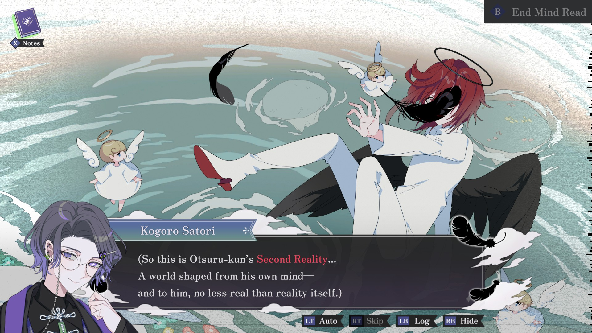
if you stay
if you stay is a yuri romance visual novel from solo developer Yukimisoft. Visually, this is made to fit with the old PC-98 style, with hand-drawn pixel art, chunky borders, pixelized font, and the rest. The game's story revolves around Fumiko, an honors student who had their life upended when they were outed as a lesbian by a former best friend, as she spends her last day in her hometown with her girlfriend, Mika. The writing in this game is flowery and heartbreaking, and seeing the internalized homophobia and societal pressures this child is going through hurts me a lot. Mika's sprite is adorable, and is extremely well-made and fitting to the intended era, with perfect expressions and movement. The CGs are masterful, and the backgrounds are evocative of a much simpler era, while discussing topics that are important then and now. The music is soft and unobtrusive, and works well to fit the bittersweet tone of the demo's story, a great collaboration between Yukimisoft and her composer, WilliamMusiek. The game is almost entirely done solo, and that's a lot of work for one person, so the length of the total game is meant to be shorter, and the game's development has taken quite some time. It even includes an afterword by the developer about her thoughts, and it's always great to see the viewpoint of the author like that. My only complaint with this game is that there are a number of grammar and usage issues in the text, making some sentences hard to parse. However, with a pass through by an editor, I think this one ends up as an all-star among indie visual novels, and a touchstone for the LGBTQ+ visual novel community as a whole. Incredible work, Yasmine, thank you for sharing this with the world. Please, everyone, wishlist this one, and since it'll be free on release, make sure to come back then to play the whole thing, too. 9/10.
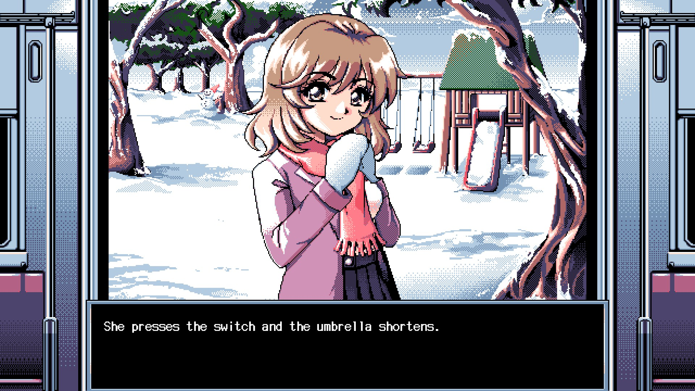
AKIBA LOST
AKIBA LOST is a live-action VN, similar to 428: Shibuya Scramble, by IzanagiGames in collaboration with Nippon TV and AX-ON. It's a game about the production of the fictional live-action game AKIBA LOST and the cast of actors set to play in it, as their tangled lives change the course of each others' fates. This demo is pretty long, which is both to its benefit and detriment. At times, I felt like it might have harped on about something a little too long, and yet the pacing for the story is mostly okay. The in-universe game is meant to be about a series of serial kidnappings that happened 13 years prior, one of the victims of which is sister to two of the main cast members. Like 428, the main mechanic is that you swap between each character to help alter the paths of other characters to avoid bad endings or unfavorable outcomes. It's a strange game, and there's an amount going on here that feels arbitrary, but I'm willing to put up with some amount of that for them to tell their story. The casting is quite good, with Yui Oguro from AKB48 playing one of the main girls, and many of the actors are competent in voice. However, some physical acting is a little wooden, which suggests to me that maybe some number of them are more comfortable voice acting more than doing live-action acting. The music and sound effects are small, tidy additions that are competent, and the special effects are pretty impressive. I think costuming could have done another pass with some of the still shots, but overall, it comes across well-produced. While it might not entirely be my thing, I think I'll come back to it after release if I've already finished 428, because it might have something going for it that I'm just not able to see in this demo. 6/10.
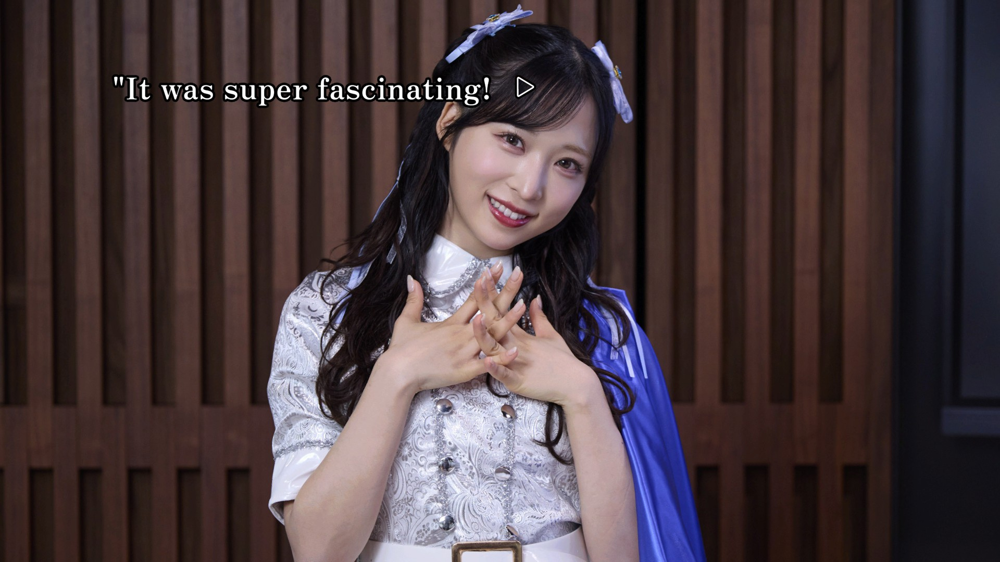
Red Chat Ritual — TSUMIMI TIME
Red Chat Ritual is a horror visual novel from Tohakusha, Inc., being their first title. The game is a parasocial livestream simulator-style game, where a livestreamer (Tsumimi) goes on adventures to investigate her missing partner in an abandoned village, and you as the player need to buy her gifts, send SuperChats, and do investigations of your own to help. This game is... franky confusing. It's got a lot of interaction points, but none of them really seemed to matter much. Buying gifts, working a job, or doing investigations on the web all seem to shake out as background noise, leading to a feeling that you don't really affect anything at all, which may very well be the point. The horror aspects are pretty thematic and toned down, rather than forefront, and the game lacks much in the way of spooky ambiance or scary imagery. The pixelated, cutesy stream aesthetic doesn't really help this, but it means that more people can experience this if they want. I'm not really sure I can recommend this one as it stands, it has a few translation issues and the gameplay is needlessly opaque. Still, the art is pretty and the music is boppin'. 6/10.
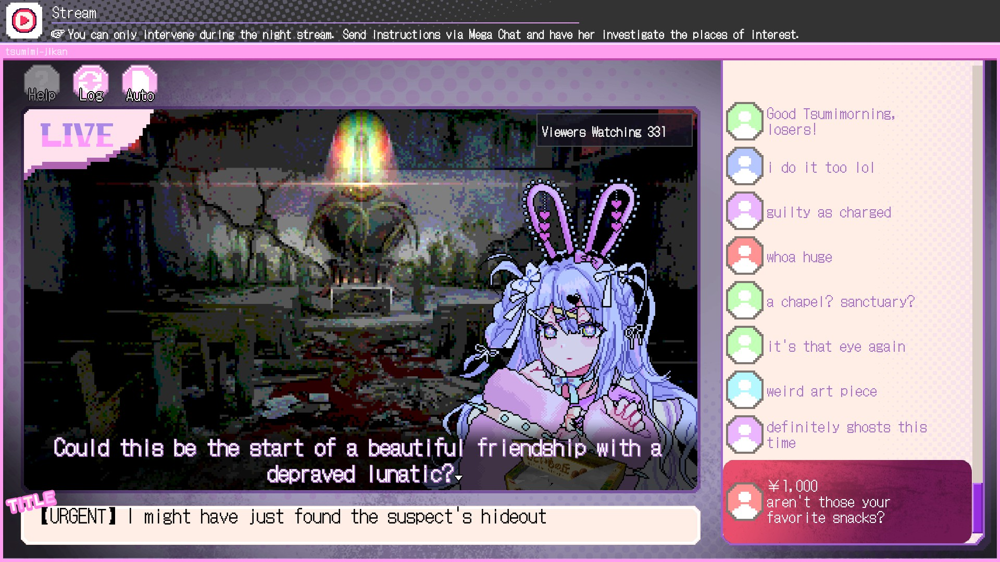
AENIGMA
AENIGMA is a sci-fi visual novel by a newer indie studio, inspired by Steins;Gate, Saya no Uta, and NOexistenceN that is vaguely about a war between carbon-based and silicon-based lifeforms. In reality, the purpose is for it to be about germanium-based life, known as Aenigma, who integrate cybernetics. At least, I'm pretty sure that's what it's about, because the writing in this game is beyond clumsy. The non-chronological storytelling is helpful in places where it gives context to a scene, but sometimes it feels like it entirely dodged context for something I'm supposed to know already. This demo is very, very long, and could really do with a pass by an editor. The devs pride themselves on 40+ characters, 2000+ backgrounds, and 100+ audio tracks, but this only serves to make this the world's best lesson about the difference between quality and quantity. While the character sprites and backgrounds are really well-crafted and quite impressive, I would look at these numbers, as a developer, and immediately start looking at where I can start cutting. I don't even know where those music tracks are, as almost this entire demo is without any music at all. Characterization is at a minimum here in an extremely long introduction, unlike its inspirations, and the worldbuilding setup it gives in leiu is poorly conveyed. Characters are named after historical French, Roman, and British figures, with tenuous connections to their inspirations at best. This game feels like it wants you to think it is like games the writer likes, and uses tools those games used without understanding why. The most egregious of these is its ham-fisted inclusion of philosophical concepts in places where they simply don't improve the narrative, like the scene about the Monty Hall problem. One of these, about the Ship of Theseus, would have been a really good way to start the story if it were not so far into the writing and were much shorter, as it seems as though the story intends to use the theming of "the person you were dies the second you learn something new" in other ways. This one's a mess. As a friend, Chalk, and I said while we were reading through this, "30% of this game is just the 'the poison for Kuzco, Kuzco's poison' bit but it's not funny and is just harping on an unrelated concept, 20% is the main character flirting with his sister, and 50% is technobabble." Without another pass by an editor and some major trimming, this one's a hard pass from me. 3/10.
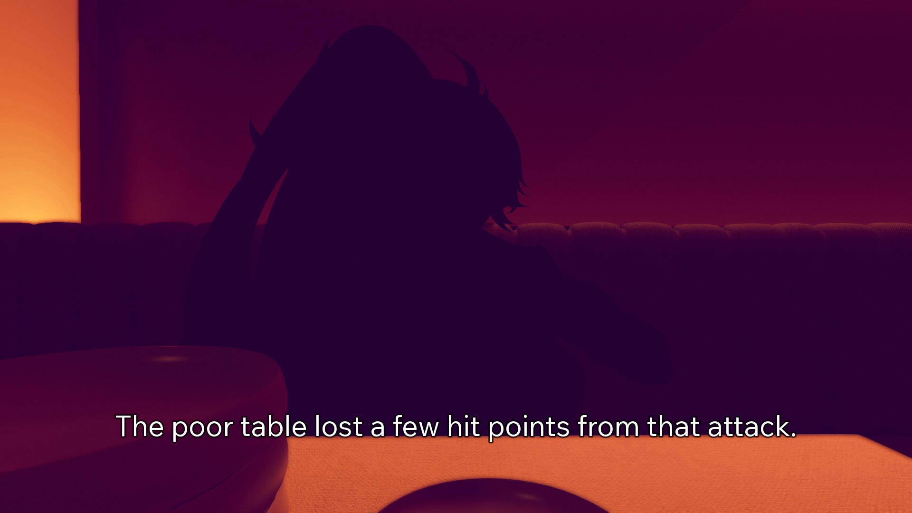
Short Short Fictions
Short Short Fictions is a retro-style visual novel adventure game by developer 密輸水産. The game centers around Sasaki, an amnesiac character who made a deal with Newy, a demon in the form of a retro handheld. Newy collects the life stories of dying humans and makes them into cassettes to be played by others. This game, in full, is meant to encompass three such cassettes as well as the story of Sasaki themselves. The demo, however, is the first game (and an existing game by the developer on itch.io), Don't Say Yes, about a spacefaring warrior who lands on the moon and meets a demon, and the rule of the game is that you can't say yes or you get a game over. It's clear that Newy isn't entirely telling the truth about everything from pretty early, but Don't Say Yes is a really short but very compelling story about knowing when to draw the line. The art is simple and competent within that game, and the visuals of Short Short Fictions as a whole are quite pretty. The soundtrack is competent and somewhat catchy, and the writing is powerful for a game that only takes itself just so seriously. Overall, I think this one's going to be great. 8/10.
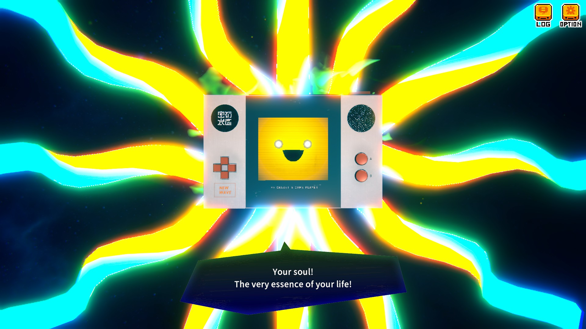
The Echo of MeMe-For You Adrift in the Sea of Reveries
The Echo of MeMe is a surreal advenutre visual novel from indie developer 宇宙兔工作室. It's similar to Yume Nikki, but a lot less free-roam; you explore Meme Space, interacting with aspects of reality, yourself, and others, and gather memes to use to share with NPCs or remove roadblocks to explore further. This game's dialogue is translated extremely well, with every line being entirely understandable in English. The game boots into Chinese, but don't let that deter you, as the language button is on the main page. The game's settings are simple and entirely inaccessible from the main menu, but there doesn't really need to be a ton for a game like this. The visuals in this game set a comfy vibe that is maintained the entire playtime, and the music is beyond cozy. If you're looking for a well-written cozy game experience that gets a little weird, I think you could do a lot worse than this one. 8/10.
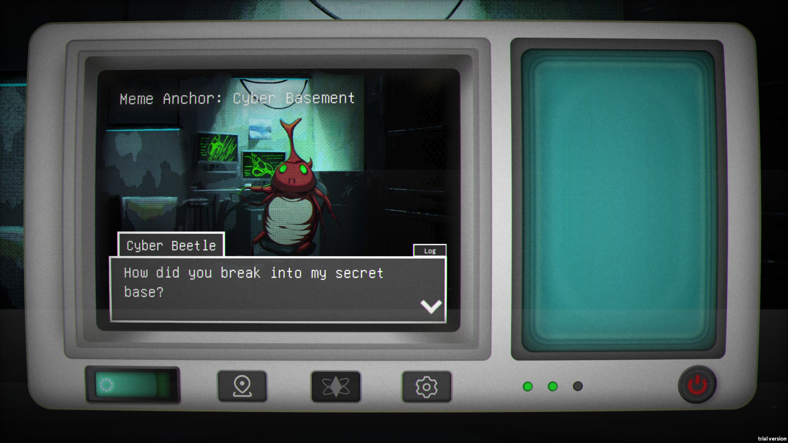
Four Lights
Four Lights is an urban fantasy romance VN from a solo/duo indie studio, Tiamant Co., Ltd.. The main plot is that Lucifer is making one final gambit using little gremliny guys named Dreamps to control humans into acts of terror to disrupt God's order. The Christian theological overtones are very quickly brushed aside, however, as this game is about high-technology future Seoul and people with superpowers. The demo is really short, but apparently the first three chapters were already released and the full package is going to be together at the end with the last route. As a result, I don't have a huge grasp on what's going on, other than a socioeconomic conflict regarding the implementation of teleportation technology and its effects on transportation and delivery workers and infrastructure. The art is really, really pretty and well-arranged, the UI is positively delightful, and despite using Ren'Py for development they managed to shrug off some of the "stock" feeling that many Ren'Py titles end up with. This game has great voice acting, and the writing is above average, although it could use a pass with an English proofreader as it struggles with punctuation and sentence structure at a few points. All said, however, I'm probably going to read through the whole thing to review the final product once it's out, and I'd suggest you try the demo to see if you'll do the same. 9/10.
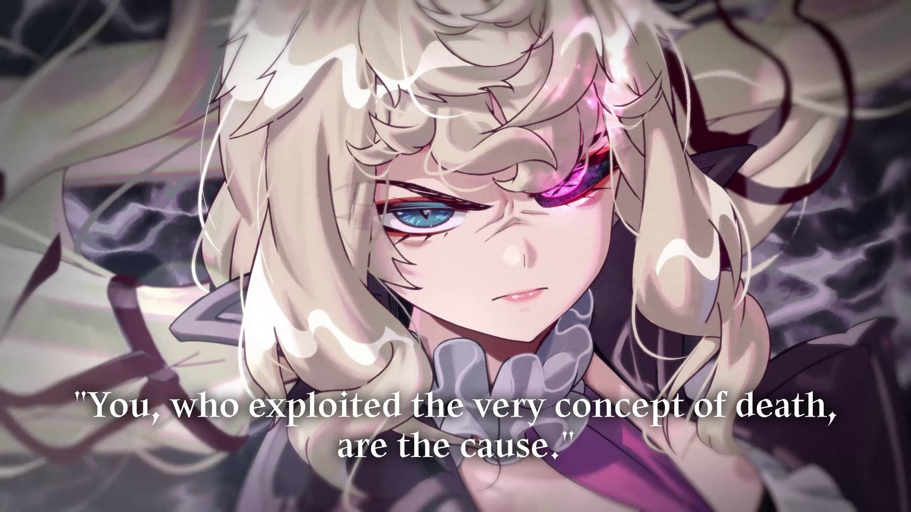
Doomed Otaku
Doomed Otaku is an adventure game from Korean indie developer KiwiSaurus. The game is a female otaku-focused adventure about Jin Da-yeon, a Korean otaku who gets way in over her head by managing a group order for some Japanese merch for people in an idol MMO she plays, then spending all of it on other things. This game has a lot of charm, and it's clear the creator has personal experience in otaku communities, with characters being bright and colorful but also realistic to people I've encountered personally. The game has a few main mechanics, being split between the real world (trying to fix the problem you caused) and the virtual world (minigames and community drama management). The story evolves quickly as Jin has to lie to her friends who trust her wholeheartedly in order to get out of her predicament. The main story minigame of judging a "callout" trial was cute, and the other minigames are fun, although I can see managing the dating sim mechanics being a little too tedious for my liking. This game's art is very well-constructed, and the music is exactly what this game needs to keep the mood where it should be. My only real complaint is that the English translation needs another pass by a proofreader/editor, because other than some larger-scale errors, it's a fun read. Give it a try! 7/10.
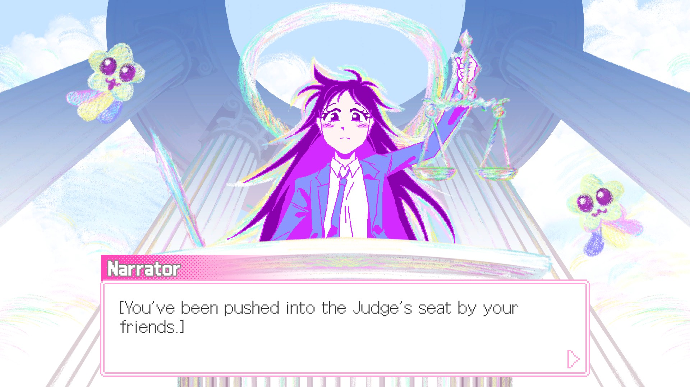
Ember Express
Ember Express is a 2D-sidescrolling puzzle-adventure visual novel about a girl who loses everything and goes to work for a mysterious corporation. Before we get too far in, I should make this intimately clear: the developer is a big SCP fan, and this is heavily inspired by SCP. The gameplay is split between facility exploration and "analysis", where you solve small quantum computing puzzles to progress your job. The story is all about trying to solve the mystery of a major techological crash incident called the "Ember Incident", as well as the purpose of a large icosohedron and major hallucinations that accompany it. This game has very cute chibi sprites, reminding me a lot of the nuggets from Lobotomy Corporation, but the rather serious atmosphere is much more muted than in that game. The music is nice, but more subtle than I'd like in a game like this. Really, my only complaints are with the writing. While the story concept is interesting, the demo spins its wheels a lot by giving the player information that the character doesn't have, so she just looks foolish the entire time rather than that she is missing memories. This game seems to bridge somewhat off of their previous game, Silence Café, as well, but I'm not sure to what degree. The characters are cute, the backgrounds and CGs are beautiful, and the dialogue is enjoyable to read, but the dialogue and notices could use a major pass by an editor/proofreader, as the translation leaves several scenes hard to parse. Overall, I think this one could be really fun with some minor fixes, and I hope they make it even better, as their character design is great. 7/10.
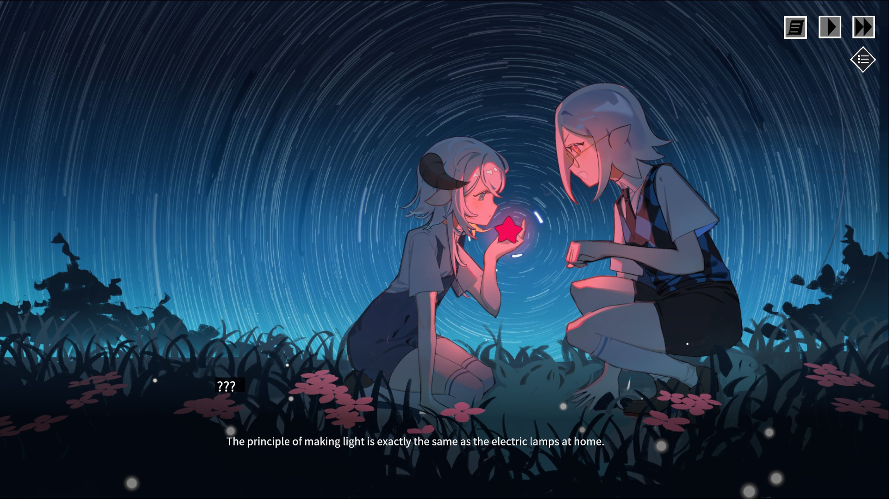
Sovereign Tower
Sovereign Tower is a fantasy management simulator visual novel from indie studio Wild Wits, the creators of last year's Crown Gambit. This game puts you in the role of the Sovereign, a leper who escaped their burning village to end up at a tower of myth, opening it up for the first time in ages and being given the divine right of rule. Before I get into the gameplay, I need to say that this game is beyond beautiful. Every character is well-designed, telling you exactly who they are within moments of meeting them. The backgrounds are immaculate, and stylistically they've improved well upon the already very pretty Crown Gambit. The gameplay is a fairly standard kingdom management simulator, in which you as ruler receive requests from various factions and individuals, and need to make choices based on how you wish to rule. The primary section of gameplay is managing your Knights of the Round Table, who each have their own likes, dislikes, and capabilities. Sending the right knights on the right quests will make them like you more, produce better results, and even sometimes cause special events. Sending those unqualified or unwilling, however, can result in the knight's death, destruction of territory, or the ire of the people. All of this is quite enjoyable to manage and keep track of, and to help, there is a demon dwelling within your tower that can turn back time, giving you a second chance at any encounters or scenarios, in case you made the wrong choice. The music in this game is simple but thematic, and there was even a real vocal number from a bard that was downright enthralling within the demo. Add all of this a system for romance and friendship with your knights, and I think passing up on this would be an absolute mistake. I can comfortably say this is one of the best demos I've played this year. 10/10.
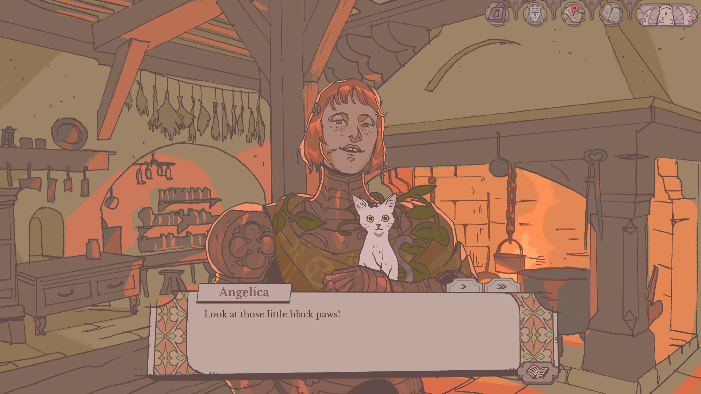
Our Wonderland
Our Wonderland is a remaster of a 2024 horror-fantasy visual novel from Carrot Patch, making up a multiverse that includes Our Fantastic Wonderland and Our Cinderella. The story's about a group of adults who opened a portal to Wonderland as children through a ritual, grew apart as adults, and are coming to terms with the things they experienced there as children (that we the player never really see) but repressed for the sake of memory. While "horror take on Alice in Wonderland" isn't exactly the world's newest idea, this VN delivers the death and gore as kicks and punches to your face and stomach; most of what you'd expect to happen is exactly what you'll get, and more. Visually, Our Wonderland has a pretty unique style as far as VNs go, more akin to a Western cartoon than the anime you're more likely to see, which works perfectly as a buffer against the horrors you're going to witness. The backgrounds seem as though they are digitally edited photographs, or perhaps colored pencil drawings, I'm not quite sure, but they're the prettiest part of this game by far. The death scenes are plentiful and horrific, with a censorship toggle being only barely enough to stop the stomach from turning in my case. More horrendous than the imagery within, however, is the prose, which describes each death, each near-miss, each nonsensical terror Wonderland has to offer with gut-wrenching detail that ties the whole thing together enough that you never quite get a real break from the knowledge that everything is out to kill our dear protagonists. Each of the main characters are enjoyable to read, with Genzou being my favorite, which makes it feel doubly bad when you screw up and watch them meet a fate they may or may not deserve. The story goes a lot of places I wasn't sure it would, but was pleasantly surprised to see it tackle. Musically, this game is pretty muted, although the more intense scenes have intense music to follow them that just add to the worry that the decision you just made might not be correct. I've never played the original, and yet I think I might play this remaster in full. Just be prepared, those content warnings are not just for show. 9/10.
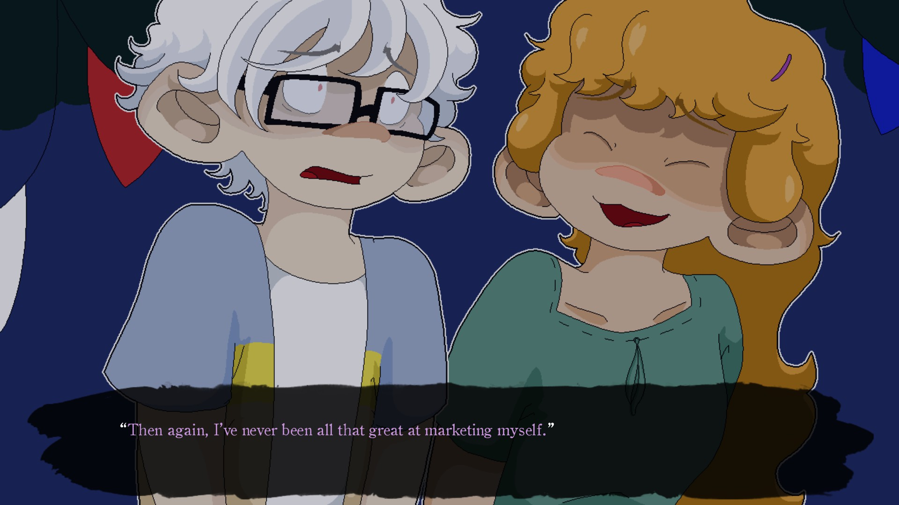
And that's all the VNs I could review. There were more, but there were a few games that either advertised an English translation but the demo was untranslated, or were sequels to games that I've never played that required understanding of the previous game, or were undisclosed AI slop. Below here are a few indie non-VNs I tried as well, as breaks between reading. Note that some of these might not have screenshots, because I either couldn't get a good one or didn't care.
Furyball: Rogue Revenge
Furyball is a roguelite racquetball twin-stick shooter. If that sounds weird, that's because it is. You effectively play raquetball, but in variable arenas while trying to hit enemies with the ball to kill them and move on. It's very much "Hades, but Sports" in the best and worst ways. There are quite a few typos abound, but that's not really an issue. The real issue is that nothing really gets explained at any point. Specifically, the room symbols are something you kinda have to just try and find out, which works in a game like Hades because the upgrade screen associates each symbol with a god, and each upgrade has copious text explaining what it does. In this, there are the same room symbols, and you can pick out when a room has either a weapon mod, a heal, currency, etc., but when upgrades are in question it's very barebones. Additionally, and the most frustrating part of this game from a gameplay standpoint, the game's intro talks about how "the only way is to follow the rules of Furyball", but you actually play by entirely different rules than every enemy. Hitting enemies with your racquet does nothing but stun them, it does not deal damage, meaning you can only deal damage with the ball. However, enemies can hit you with goddamn anything and deal real damage to you; their fists, a bat or racquet, fucking sparklers? It took me out of the whole experience when I just had an enemy run up to me and beat me to death with a bat, while hitting them was akin to swatting them with a newspaper. When you get going with the ball, it's chaotic but satisfying, but overall I can't see myself playing this for very long. The visuals are the right kind of Mad Max-style gritty, and the character designs are cool, but it takes more than pretty art to keep me in a game with proper gameplay. 4/10.
TORR
TORR is an indie old-school-style JRPG, inspired by Dragon Quest. In this game, you play as a knight, and your job is to go find the birthplace of the demons and eradicate them, as the world's human population has dwindled due to their destruction. Aesthetically, this game matches the era, and in some ways, the gameplay does too. Unfortunately, not in the good ways. We've improved a lot since Dragon Warrior as game designers, but this still falls into all the pitfalls that game does, and a few that doesn't, which meant that I didn't make it very far in before I got filtered. For starters, every fight in the earlygame begins with you taking unavoidable damage. You can't prevent it, you always go second. Damage ranges vary wildly, and that goes for both enemies and yourself. You only have a very small amount of HP more than any individual enemy, and you're nearly always fighting two early on. While that might sound "fun and challenging," because there's no actual combat variety early on, you're actually pressing the "attack" button over and over, hoping you win, and then running back into the town immediately before you get a second encounter because two is almost guaranteed death. It's a mess. The music is solid, and the sound design is era-accurate, but the gameplay just makes this one not worth even bothering with, so I stopped before I did anything substantial with the story as I have better things to do than grind enemies that can two-shot me directly outside of my starting town. 3/10.
Meaningless Random Numbers
You don't really need me to say a lot about this all-star hit from the NextFest, but I will anyway. Meaningless Random Numbers is an indie incremental gambling horror game from developer Nikko Nikko. The story is pretty minimal, but you are a sinner who has given your heart to the devil in order to escape eternal punishment... or something. It's pretty weird. All you need to know is you gamble with dice over and over to get Yahtzee hands while murdering innocents to increase your Fear multiplier and paying your debt to the devil off early every time to increase your Anxiety multiplier. The game's visuals are superb, a mix of pixel art and digitally altered photographs taken by what I can only assume is the Game Boy Camera. The music is subtle but comforting, making it really uncomfortable when the game, for one reason or another, takes it away from you. This game is definitely horror themed, with various minor jumpscares and a theme of inescapable debt, much like the experience of the average person. As an incremental game, eventually you reach a point that you can no longer progress, at which point you prestige, get permanent upgrades, and go again. The demo was just the right length, and yet still makes me wish I could play a little more. I should really be more careful around these gambling simulators. 9/10.
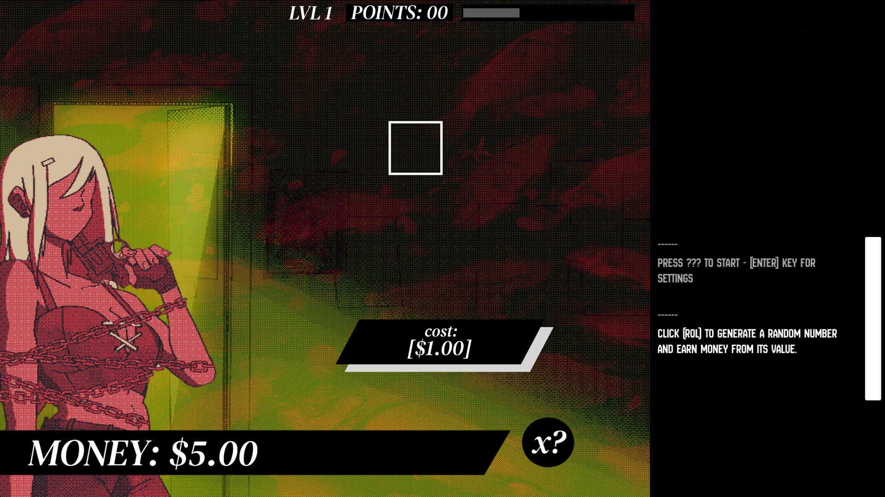
Chainsaw
Chainsaw is a psychological horror-themed (?) JRPG by Brazilian indie developer ikiru997. It revolves around a mass murderer named Isaac, as you control him as God and use him and other apostles to commit violence in your name in an attempt to prevent the end of the world... or at least Isaac seems to think so. I'm going to be honest, folks, I couldn't get very far into this. The game bugged out after roughly 15 minutes of play and I simply couldn't progress, I backtracked to see if that was an issue, and I got stuck inside a fence. The translation is a bit rough at multiple points, and text frequently goes out of the textbox, making it unreadable. I think visually this one's interesting, if not super pretty, so I gave it a shot. The game's combat is pretty similar to Final Fantasy 7 if there wasn't a limit gauge, meaning that it's simple active time battles. Status effects are pretty powerful from what I saw, so that's interesting if nothing else. However, in the time I spent with this, I didn't really get anything I could say I really enjoyed, moreso tolerated. I think with some time this could turn out to be something good, but it definitely needs a lot of work before I can recommend it to anyone. 3/10.
About Fishing
About Fishing is a fishing detective game from indie studio The Water Museum, the creators of Arctic Eggs, another game I really loved. You play as the granddaughter of a man who is imprisoned for murder after he teaches you how to speak to fish, allowing you to find the body of one of a pair of dead twins thanks to the help of a mermaid. The story is Lynchian in a way I think so few other games really get to be, and thematically there's so much here to explore. The storytelling is a little "goofy", but everything comes back around to some theme or coincidence in a way I really like. The characters are pretty few in the demo, but the dialogue is expressive and well-honed in a way you rarely see in games. Aesthetically, this game goes for a late PS1-style polygon-and-billboard look, and it works incredibly well for setting the tone. The atmosphere is immaculate, and the subtle and tense music only makes every bit of it better when it is replaced by swelling overtures or dramatic tones. Mechanically, this is a fishing game. Objectively, everything is about fishing, so your primary gameplay loop is fishing, either selling those fish outright or fileting them to sell, getting new fishing gear, and using that fishing gear to get better fish. Along the way, you can solve sidequests using your rod, find hidden items in the water and elsewhere, and solve a murder mystery far beyond the mortal ken. The secondary mechanic is a sort of "fish speak", wherein you can equip fish to your rod to control them underwater to solve puzzles and find clues. My favorite part is the pseudo-gyroscopic linecasting, which lets you alter the trajectory of your hook mid-air to do things that are impossible but necessary. I think that once this one comes out, it will be an all-timer, remembered for every aspect being perfect, and every aspect being about fishing. Play it. 10/10.
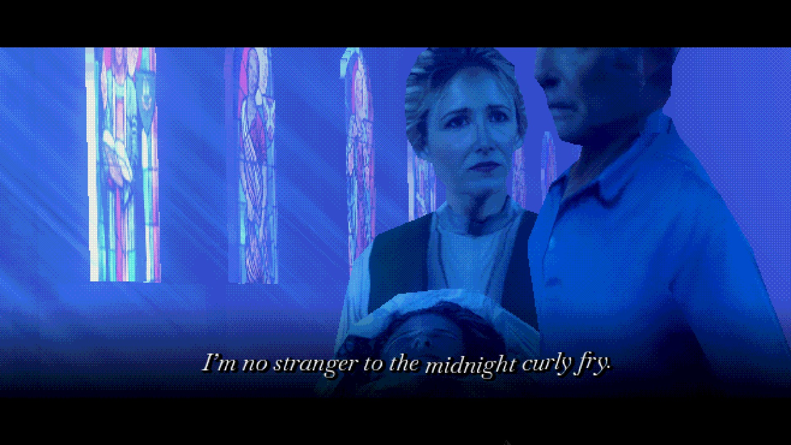